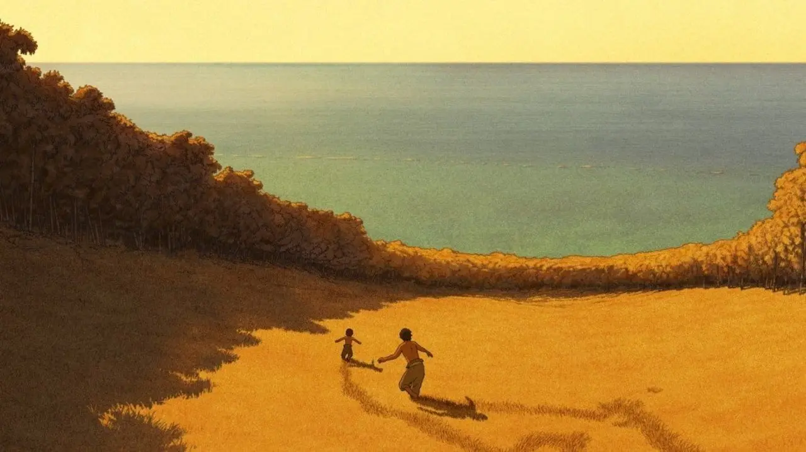

The Red Turtleレッドタートル ある島の物語 (Reddotātoru aru shima no monogatari)Release Year2016DirectorMichaël Dudok de WitProducerToshio Suzuki, Isao Takahata, Vincent Maraval, Pascal Caucheteux, Grégoire SorlatRunning Time80 minsRT Score⭐ 93%A man set adrift by a storm wakes up on a beach. He discovers that he is on a deserted island with plenty of fresh water, fruit and a dense bamboo forest. He builds a raft from bamboo and attempts to sail away, but his raft is destroyed by an unseen monster in the sea, forcing him back to the island. He tries again with another, larger raft, but is again foiled by the creature. A third attempt again ends with the raft destroyed, but this time he is confronted by a giant red turtle, which stares at him, and forces him back to the island.Characters (0)No character information available for this film.Additional InformationLocations (0)NoneSpecies (0)NoneVehicles (0)None